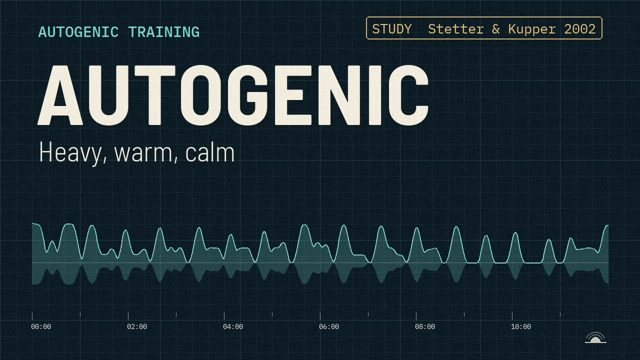
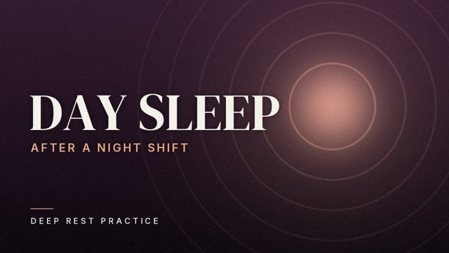
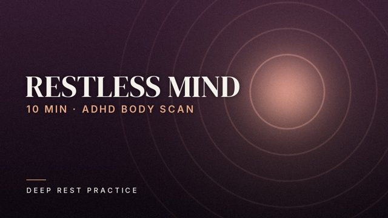
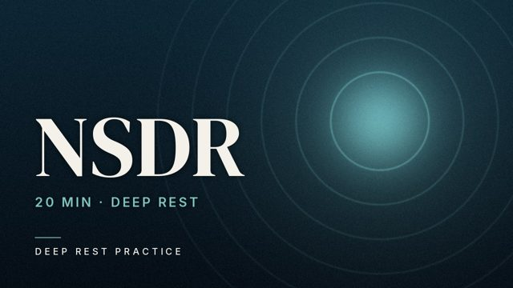

Protocols
10 Minute NSDR
A 10-minute non-sleep deep rest (NSDR) practice in the yoga nidra tradition: settle, move attention through the body, lengthen the exhale, and come back refreshed. Good for a midday reset or after focused work.
Guided relaxation built on studied protocols: non-sleep deep rest and yoga nidra, progressive muscle relaxation, body scans, autogenic training and slow breathing. Calm, unhurried, and honest about what the science says.
Follow the circle: in for four, out for six. That is six breaths a minute, the pace most often used in slow-breathing research. Let the breath out be a little longer than the breath in.
Background: Zaccaro et al. 2018, Laborde et al. 2022. Read the studies
Four series: Protocols for the classic methods, Sleep for bedtime and the middle of the night, For You for specific situations, and Resets for a few minutes in the day.
A 10-minute non-sleep deep rest (NSDR) practice in the yoga nidra tradition: settle, move attention through the body, lengthen the exhale, and come back refreshed. Good for a midday reset or after focused work.

Progressive muscle relaxation: gently tense each muscle group at half strength, then release and notice the difference. A classic relaxation method, guided step by step.

A mindfulness body scan in the MBSR style: slow, curious attention from the toes to the crown of the head, noticing sensation without needing to change it.

Autogenic training, the relaxation method developed by J.H. Schultz: heaviness, warmth, a calm heartbeat, easy breathing, warmth in the belly and a cool forehead, with the classic take-back at the end.

Yoga nidra for bedtime: 20 minutes of guidance that grows quieter as you go, then 40 minutes of soft music and rain fading out. There is no wake-up at the end.

For nurses, carers and everyone who sleeps while the world is awake: a wind-down for daytime sleep, with soft rain to cover daytime noise and a slow fade, no wake-up.

For when you wake in the night: no clock-checking, nothing to solve now. Soften the body, slow the exhale, then a gentle picture game that gives the mind something quiet to do.

A 5-minute slow-breathing break: in for four, out for six, counted with you at first, then on your own. About six breaths a minute.

A body scan made for busy, restless minds: short silences, small movements allowed, an anchor every few sentences, and drifting off and coming back is part of the practice.

This 20 minute non-sleep deep rest practice guides you through settling, a simple intention, a slow rotation of attention through about 60 body points, breath counting with long exhales, pairs of opposite sensations, a calm visualisation of a quiet place, and a clear return.
For each method we list the studies behind it, how they were designed, what they found, and where the evidence is still thin.
Every practice follows a method that has been studied, step by step, rather than an improvised script.
We describe what each study tested and found, including the limits. We never promise a cure.
A soft voice, slow pacing and gentle music. Sleep practices fade out without waking you.
Deep Rest Practice is an independent library of guided relaxation. We read the research, pick the protocols with a real paper trail, and turn them into calm, carefully paced practices you can return to every day.
Questions or ideas for a practice: hello@deeprestpractice.com